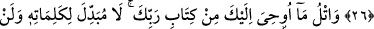

İNŞÂALLAH DEYİNİZ
23. Hiçbir şey için “Bunu yarın yapacağım” deme.
24. Ancak Allah dilerse (yapacağım de). Unuttuğun zaman Allah’ı an ve “Umarım
Rabbim beni, doğruya daha yakın olana eriştirir.”de.
25. Onlar, mağaralarında üç yüz yıl kaldılar ve dokuz yıl da buna ilave ettiler.
26. De ki: Ne kadar kaldıklarını Allah daha iyi bilir. Göklerin ve yerin gizli bilgisi
O’na aittir. O’nun görmesi de, işitmesi de şâyanı hayrettir. Onların (göklerde ve
yerde olanların), O’ndan başka bir yöneticisi yoktur. O, kendi hükümranlığına
kimseyi ortak etmez.
27.
Rabbinin
Kitabı’ndan
sana
vahyedileni
oku.
Onun
kelimelerini
değiştirebilecek yoktur. O’ndan başka bir sığınak da bulamazsın.
Yapmaya azmettiğin: “Hiçbir şey için “Bunu yarın yapacağım” deme.” Buradaki
yasaklama, te’dib içindir, âdâbla ilgilidir. Buradaki “yarın”dan maksad, mutlak olarak
gelecek zamandır. Gelecek zamanın çerçevesine, gelecekten bir parça olan “yarın” da
evveliyetle dâhildir. Çünkü bu âyet Yahûdiler, Kureyş’e “Muhammed (s.a.)’e; rûhu,
Ashâb-ı Kehf’i ve Zülkarneyn’i sorun” dedikten sonra nâzil olmuştur. Kureyş, bu üç
husûsu Rasûlullah (s.a.)’e sormuşlar o da: “Yarın bana gelin, bu sorduklarınızı size
bildireyim.”[165] buyurdu, “İnşâallah” demedi. Bunun üzerine Efendimiz (s.a.)’e
günlerce vahiy gelmedi ve bu durum O’na pek ağır geldi. Yâni O Hz. Rasûl’ün kin ve
kötülükten berî olan gönül aynasına keder ve hüzün tozu çöktü. Kureyş ise O’nu
yalanladı ve “Rabb’i onu bıraktı, ona kızdı.” dediler.